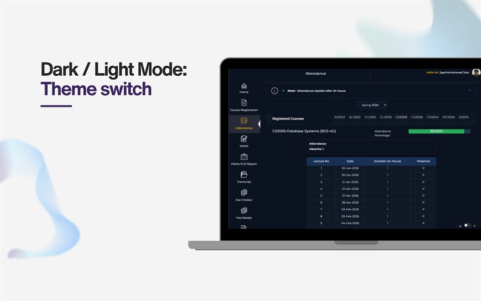
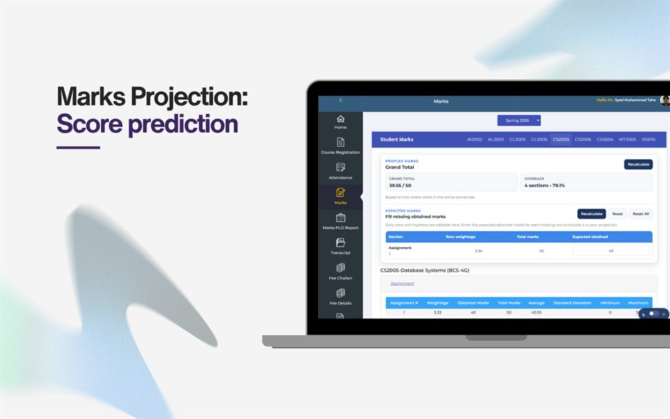
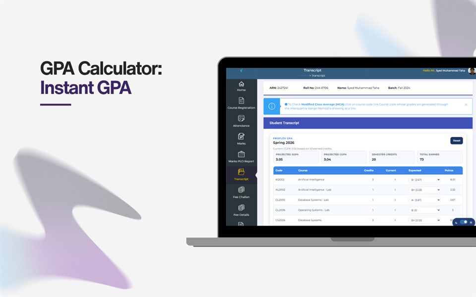
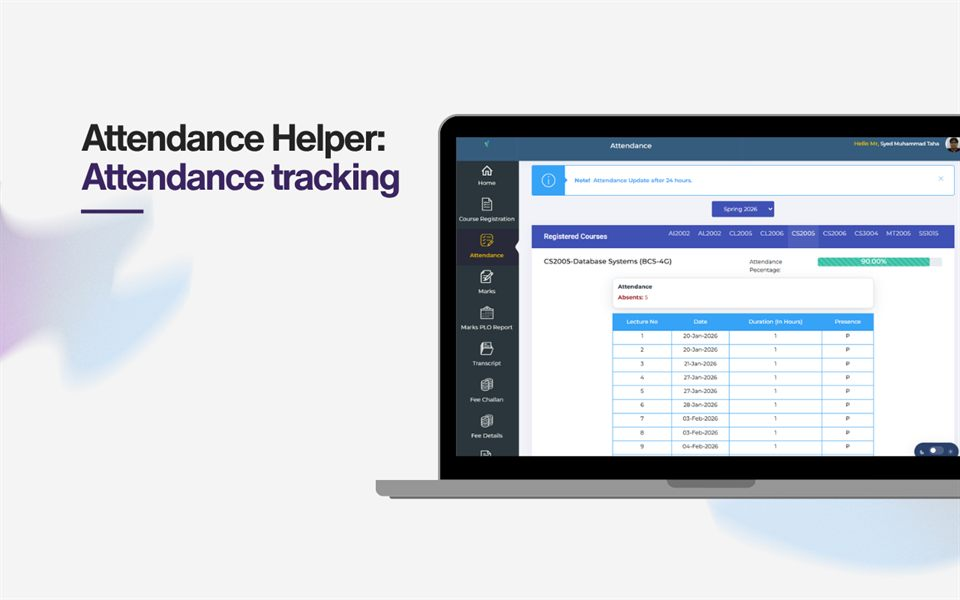

Course Feedback Auto-Fill
Speed through course feedback forms with helper actions that reduce repetitive clicking and keep the flow readable.
FAST FLEX Chrome extension · Local-first · Manifest V3
ProFlex reduces repetitive portal work with a clean, fast extension for course feedback, marks projection, transcript GPA previews, attendance checks, and theme control.

Features
Speed through course feedback forms with helper actions that reduce repetitive clicking and keep the flow readable.
Enter expected marks and preview how they affect your totals before you submit anything.
Adjust transcript grade selections and see projected SGPA and CGPA changes immediately on the page.
Switch between light and dark portal styles and keep the preference saved locally in your browser.
Keep attendance details easier to scan and follow while you move through portal pages.
Open a focused extension popup that gives quick access to the project and support links.
Showcase
Theme switching with local persistence for the portal.

Preview the effect of expected marks before committing.

Adjust grades and check the projected GPA instantly.

Keep attendance details visible and easy to interpret.
FAQ
It helps FAST FLEX students with feedback, marks projection, GPA previews, attendance checks, and theme switching.
FAQ
Yes. It is local-first, stores only convenience settings in the browser, and does not collect telemetry or upload portal data.
FAQ
Use the Chrome Web Store link above or read the installation guide for unpacked setup steps.
Privacy
ProFlex stores only small convenience settings in the browser, such as theme choice and calculator state. There is no telemetry and no automatic upload of portal data. Read the full privacy policy.
Install
Load the unpacked extension in Chrome or install it from the store link above. See the installation steps.
Contact
Visit the developer profile for updates, feedback, and source notes.
GitHub profile